Ligar os sistemas aos agentes
Porque é que o catálogo e o Wazuh têm de estar ligados; associar e desassociar um agente a um sistema, o que isso faz ao estado (Monitorizado ou GAP) e à fila de integração; e o que o Wazuh vê do outro lado — os agentes não mudam, a ligação é do catálogo.
O catálogo do SecVision diz que sistemas a organização tem. O Wazuh diz que máquinas estão a ser vigiadas. Nesta página vemos como se ligam os dois, e o que essa ligação muda.
O conceito
A regra é simples: um sistema com agente associado está monitorizado; sem agente, está em GAP. A parte do âmbito que tem agente é a cobertura de monitorização, um dos indicadores do painel.
E a ligação funciona nos dois sentidos. Um agente que não está associado a nenhum sistema é uma máquina que o catálogo não conhece, e isso também é uma lacuna: ninguém lhe deu dono, nem criticidade.
Porque é que a ligação importa
Um sistema com agente associado está Monitorizado; sem agente, está em GAP.
A cobertura de monitorização é a parte do âmbito com agente: é um indicador, e um facto para o auditor.
Um agente sem sistema é uma máquina que o catálogo não conhece — e isso também é uma lacuna.
No SecVision
Menu: Identificar › Catálogo de Segurança
No catálogo de segurança, a coluna Wazuh mostra o agente de cada sistema. Um clique no nome abre a máquina no Explorer.
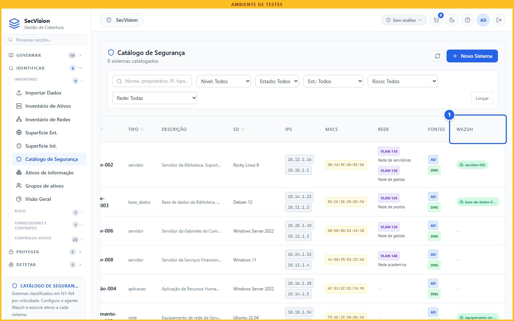
O ecrã em Identificar › Catálogo de Segurança.
O agente de cada sistema
Desassociar
Menu: Catálogo de Segurança › Agente Wazuh
Nas ações de cada sistema está a associação. O servidor 002 está associado ao agente com o mesmo nome. Vamos removê-la, como se faz quando uma máquina é substituída ou reinstalada.
O sistema passa logo a GAP, com a data deste momento. É dessa data que se contam os dias em GAP.
O ecrã em Catálogo de Segurança › Agente Wazuh (1 de 3).
Clique aqui.
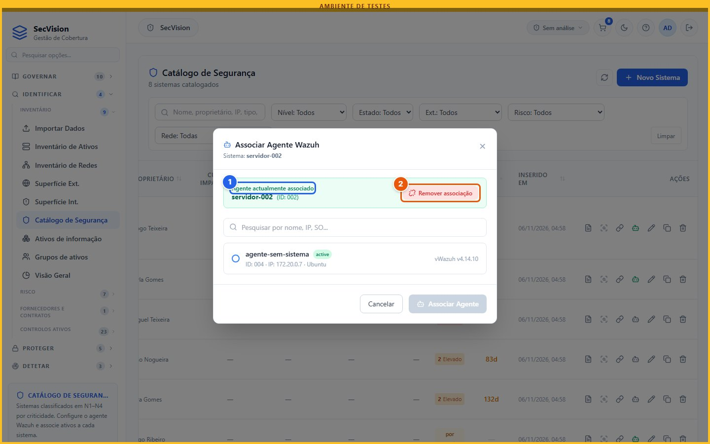
O ecrã em Catálogo de Segurança › Agente Wazuh (2 de 3).
servidor-002 ↔ agente servidor-002
Clique em Remover associação.
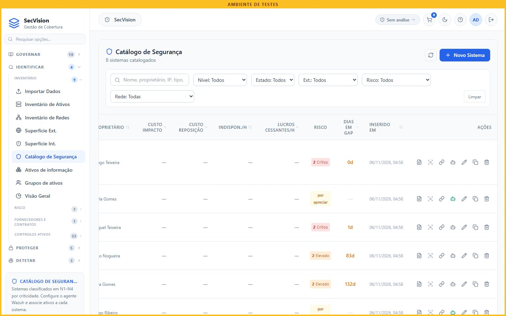
O ecrã em Catálogo de Segurança › Agente Wazuh (3 de 3).
Menu: Proteger › Instalar agente Wazuh
E na fila de integração, os sistemas desprotegidos passaram de três para quatro: o servidor 002 está lá, com zero dias em GAP, à espera de agente.
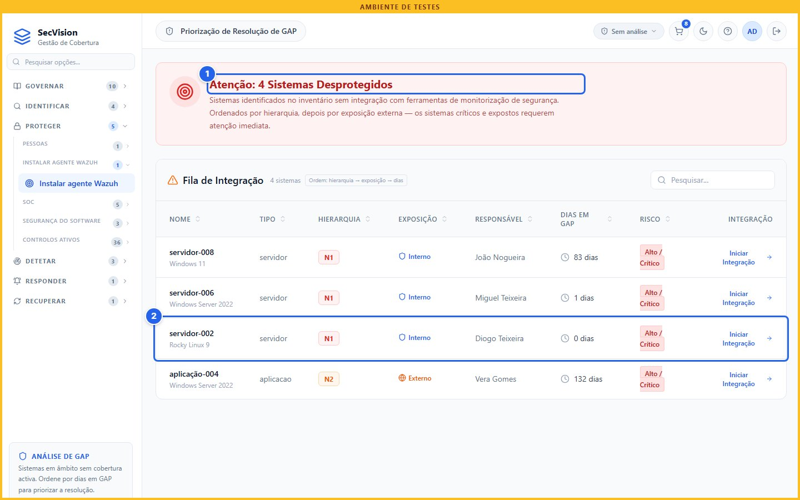
O ecrã em Proteger › Instalar agente Wazuh.
Mais um sistema sem monitorização
Em GAP desde agora
No Wazuh
Menu: Wazuh › Endpoints › Agents
E no Wazuh? Nada mudou. O agente do servidor 002 continua ativo, a enviar dados. A associação é do catálogo, não do Wazuh: desassociar não desliga nem apaga nada na máquina.
É também aqui que se vê o outro lado da lacuna: o agente sem sistema, ativo no Wazuh e sem lugar no catálogo. Quem o encontra, ou o associa a um sistema, ou regista o sistema que lhe falta.
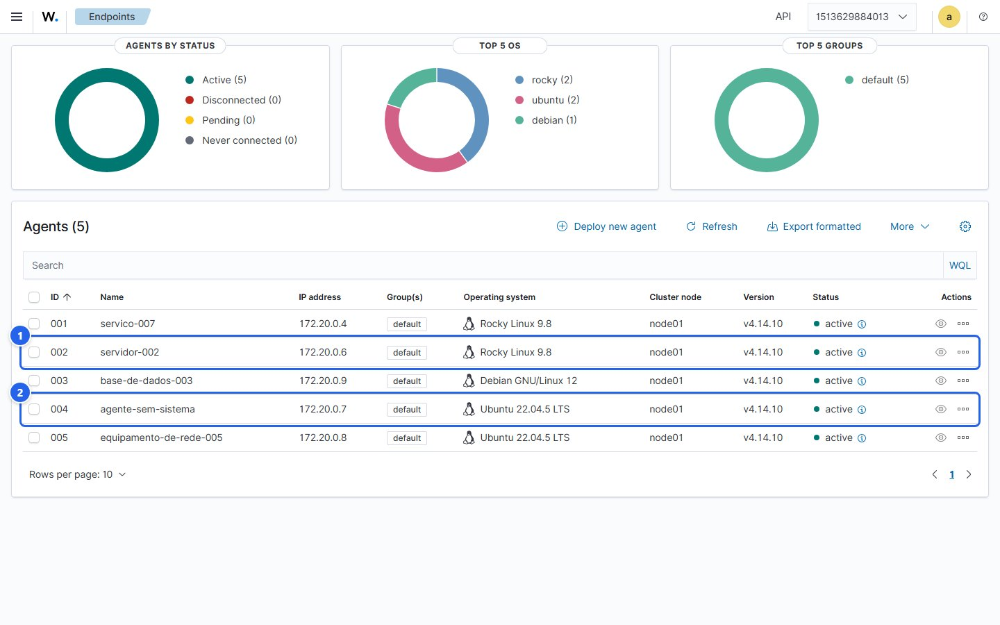
O ecrã em Wazuh › Endpoints › Agents.
No Wazuh, continua ativo
Um agente que o catálogo não tem
Associar
Menu: Catálogo de Segurança › Associar agente Wazuh
Para voltar a associar, a mesma ação. A janela mostra só os agentes que ainda não têm sistema, para não se associar o mesmo agente a dois. Escolhe-se o agente, e associa-se.
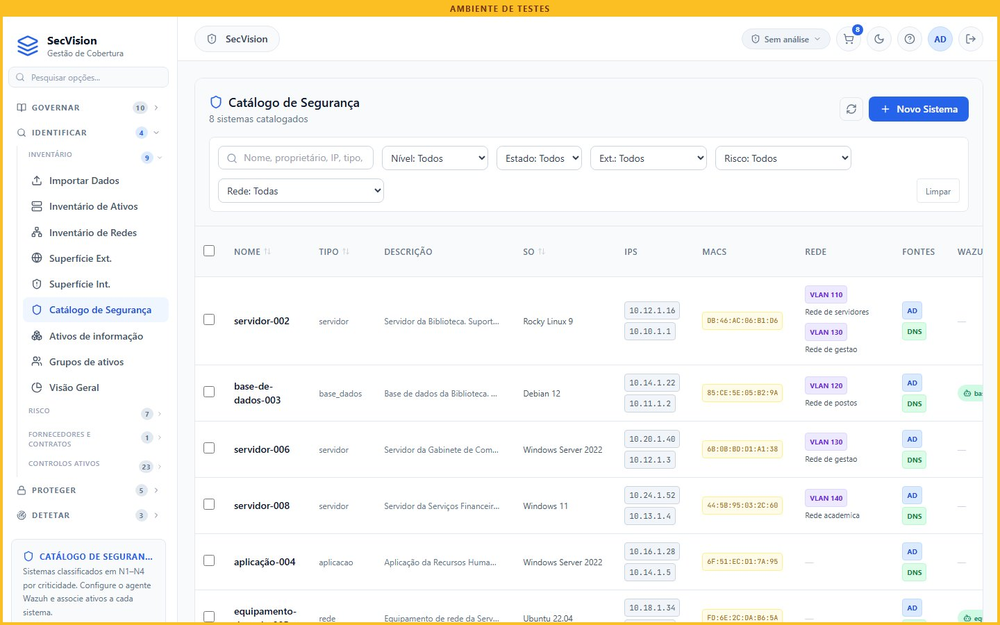
O ecrã em Catálogo de Segurança › Associar agente Wazuh (1 de 5).
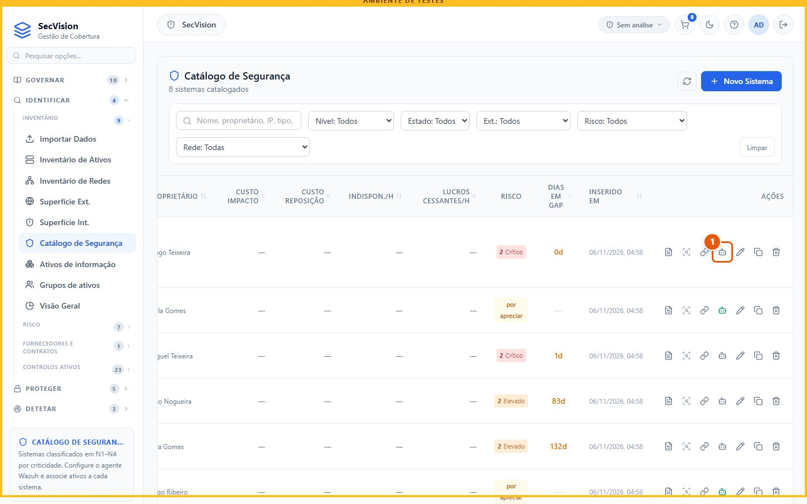
O ecrã em Catálogo de Segurança › Associar agente Wazuh (2 de 5).
Clique aqui.
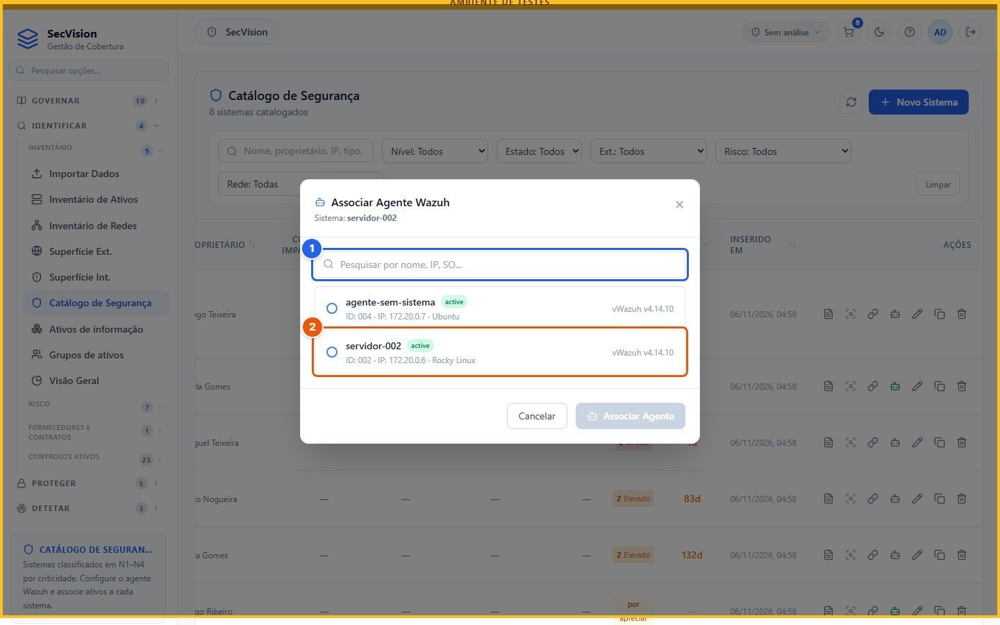
O ecrã em Catálogo de Segurança › Associar agente Wazuh (3 de 5).
Só os agentes ainda sem sistema
Clique em servidor-002.
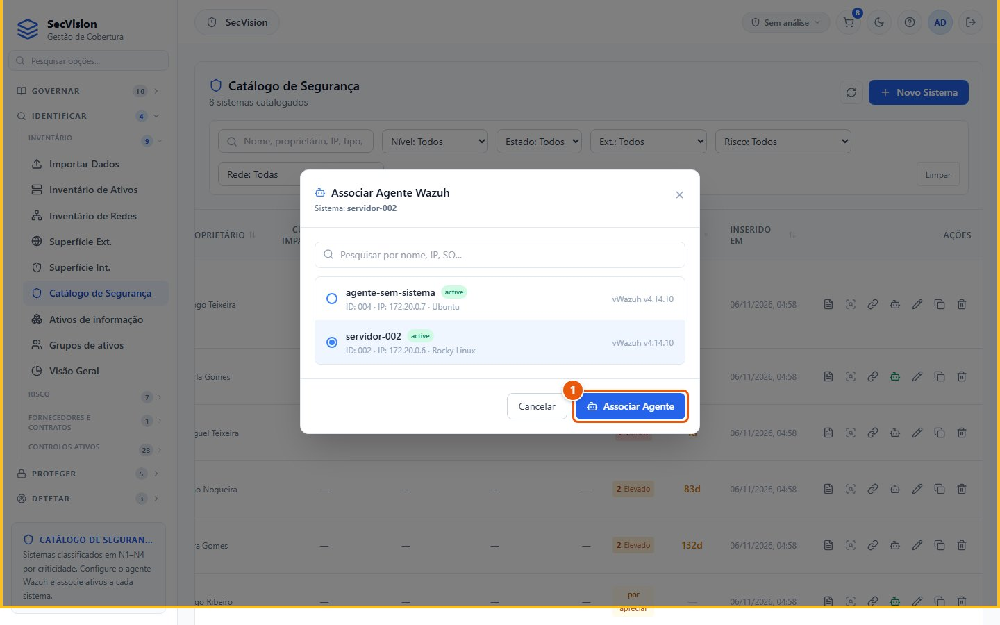
O ecrã em Catálogo de Segurança › Associar agente Wazuh (4 de 5).
Clique em Associar Agente.
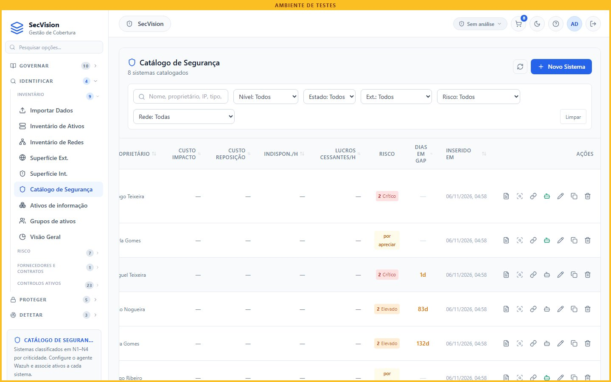
O ecrã em Catálogo de Segurança › Associar agente Wazuh (5 de 5).
Menu: Identificar › Catálogo de Segurança
E o servidor 002 está monitorizado outra vez, com o agente na coluna Wazuh.
Se alguém tentar associar um agente que já tem sistema, a plataforma recusa: um agente, um sistema.
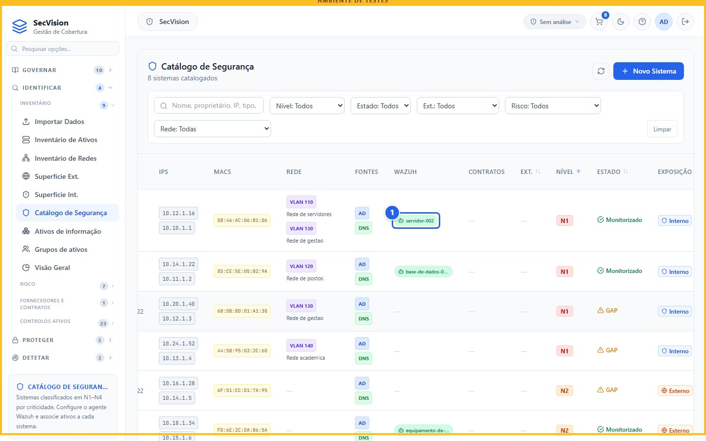
O ecrã em Identificar › Catálogo de Segurança.
Monitorizado outra vez
Resumo
A ligação é pequena, mas é dela que vêm o estado de cada sistema, os dias em GAP, a fila de integração e a cobertura de monitorização.
E não mexe no Wazuh. Para tirar uma máquina da monitorização, desinstala-se o agente nela; desassociar só muda o que o catálogo sabe.
O que a plataforma faz — e o que não faz
Liga cada sistema ao seu agente, e daí tira o estado, os dias em GAP e a cobertura.
Mostra os agentes por associar, que são máquinas fora do catálogo.
Não mexe nos agentes: associar e desassociar é só do catálogo.